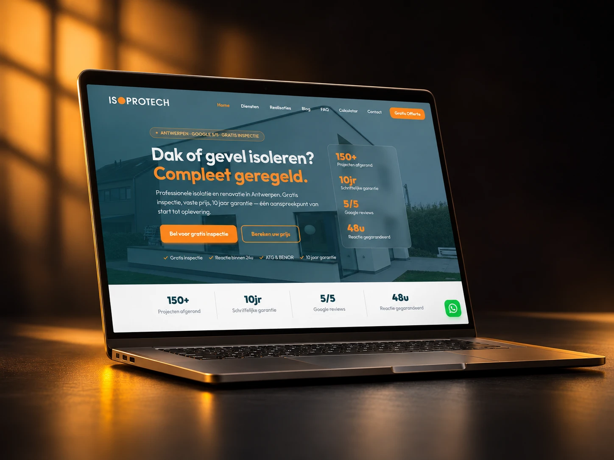
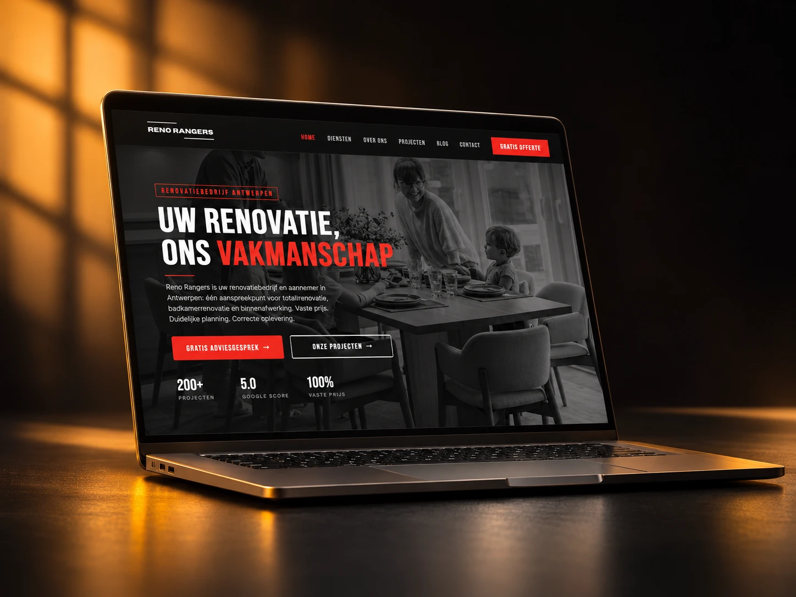

Everything your customer sees works together to build trust and win enquiries. Alles wat je klant ziet, werkt samen om vertrouwen op te bouwen en aanvragen te winnen.
You work hard to keep your business running. But some days, it feels like you're working harder just to find the next customer. Je werkt hard om je bedrijf draaiende te houden. Maar sommige dagen voelt het alsof je harder werkt om gewoon de volgende klant te vinden.
You're paying wages, covering expenses and watching another day go by without enough jobs booked. Je betaalt lonen, dekt kosten, en ziet nog een dag voorbijgaan zonder genoeg geboekte opdrachten.
Another person asking for the cheapest price. Another quote that goes nowhere. Another hour wasted. Weer iemand die naar de goedkoopste prijs vraagt. Weer een offerte die nergens toe leidt. Weer een uur verspild.
The clicks look good. The reports look impressive. But how many of those people actually became paying customers? De klikken zien er goed uit. De rapporten zien er indrukwekkend uit. Maar hoeveel van die mensen werden echt betalende klanten?
You measure, calculate, explain and follow up. They don't even bother replying. Je meet op, berekent, legt uit en volgt op. Ze nemen niet eens de moeite om te antwoorden.
Because you don't know when the next good customer will come along. Omdat je niet weet wanneer de volgende goede klant zich aandient.
Last month was busy. This month is quiet. Next month? You have absolutely no idea. Vorige maand was druk. Deze maand is stil. Volgende maand? Je hebt geen idee.
You know what you've spent. You don't know which channel actually brought the jobs that paid your bills. Je weet wat je hebt uitgegeven. Je weet niet welk kanaal de opdrachten heeft gebracht die je rekeningen betaalden.
You didn't start a business to spend your nights chasing customers. You started it to make a living doing what you're good at. WAT builds the marketing system behind your business — to attract better enquiries, convert more opportunities into real jobs, and show you where your money is actually going. Je bent geen bedrijf begonnen om je avonden te besteden aan het achternalopen van klanten. Je bent begonnen om de kost te verdienen met waar je goed in bent. WAT bouwt het marketingsysteem achter je bedrijf — om betere aanvragen aan te trekken, meer kansen om te zetten in echte opdrachten, en te laten zien waar je geld écht naartoe gaat.
We work with local service businesses in Belgium — the kind where trust decides whether someone books you or the next name on the list. We werken met lokale dienstenbedrijven in België — waar vertrouwen bepaalt of iemand jou boekt of de volgende naam in de lijst.
People choose you by how you look online before they ever walk in. Photos, reviews and an easy way to book decide most of it. Mensen kiezen je op basis van hoe je er online uitziet, nog voor ze binnenstappen. Foto's, reviews en makkelijk boeken bepalen het grootste deel.
Your revenue depends on people coming back. The system has to bring in the first visit and keep the conversation going after it. Je omzet hangt af van mensen die terugkomen. Het systeem moet het eerste bezoek binnenhalen en het gesprek daarna gaande houden.
You're letting someone into a home. Everything hinges on looking reliable: real reviews, a clear scope, a fast answer when they write. Je komt bij mensen thuis. Alles draait om betrouwbaar overkomen: echte reviews, een duidelijke scope, een snel antwoord als ze schrijven.
Bigger tickets, longer decisions, more comparing. People need to see proof of finished work and understand your pricing logic before they call. Grotere bedragen, langere beslissingen, meer vergelijken. Mensen willen bewijs van afgewerkt werk zien en je prijslogica snappen voor ze bellen.
Your expertise is invisible until it's written down. Content, positioning and a credible site do the convincing before the first meeting. Je expertise is onzichtbaar tot ze opgeschreven is. Content, positionering en een geloofwaardige site overtuigen vóór het eerste gesprek.
One to fifteen people, serving a city or a region. Too small for a marketing department, too serious to keep improvising. Eén tot vijftien mensen, actief in een stad of regio. Te klein voor een marketingafdeling, te serieus om te blijven improviseren.
We don't sell channels one by one. Each part below only earns its place because it feeds the next one — visibility, then trust, then communication, then control. We verkopen geen losse kanalen. Elk onderdeel hieronder verdient zijn plek omdat het het volgende voedt — zichtbaarheid, dan vertrouwen, dan communicatie, dan controle.
The place where interest turns into an enquiry. Clear offer, clear next step.De plek waar interesse een aanvraag wordt. Duidelijk aanbod, duidelijke volgende stap.
How you appear on Maps and in local search: photos, hours, services, questions.Hoe je verschijnt op Maps en in lokale zoekresultaten: foto's, uren, diensten, vragen.
Proof that you exist, work and answer. Not a stage — a reference people check.Bewijs dat je bestaat, werkt en antwoordt. Geen podium — een referentie die mensen checken.
One name, one look, one tone across every place someone can meet you.Eén naam, één look, één toon op elke plek waar iemand je tegenkomt.
Answers to the questions people ask before they buy. Written once, working long.Antwoorden op de vragen die mensen stellen voor ze kopen. Eén keer geschreven, lang werkzaam.
The follow-up that keeps people warm between the first contact and the decision.De opvolging die mensen warm houdt tussen het eerste contact en de beslissing.
The channel most people actually prefer. Set up so nothing arrives and gets forgotten.Het kanaal dat de meeste mensen echt verkiezen. Zo opgezet dat niets binnenkomt en vergeten wordt.
One route from "interested" to "in your calendar", instead of six half-routes.Eén route van "geïnteresseerd" naar "in je agenda", in plaats van zes halve routes.
Tracking that tells you where enquiries come from, so decisions stop being guesses.Tracking die je toont waar aanvragen vandaan komen, zodat beslissingen geen gok meer zijn.
Each project below started from a specific situation. Open a case to read what was there before, what we built, and what the client ended up with. Elk project hieronder begon bij een specifieke situatie. Open een case om te lezen wat er eerst was, wat we bouwden en waar de klant mee eindigde.

A technical service with real expertise and almost no online trace. We built the visibility and the proof: a site that explains the service, a Google Business profile that actually competes, and a review flow that finally captures what clients already thought. Een technische dienst met echte expertise en bijna geen online spoor. We bouwden de zichtbaarheid en het bewijs: een site die de dienst uitlegt, een Google Business-profiel dat echt meedoet, en een reviewflow die eindelijk vastlegt wat klanten al vonden.

Plenty of attention, wrong kind of enquiries. We rebuilt the front end of the business around clarity — fixed-price positioning, city pages, and a WhatsApp route — so the enquiries that arrive match the work they actually want. Veel aandacht, verkeerd soort aanvragen. We herbouwden de voorkant van het bedrijf rond duidelijkheid — vaste-prijspositionering, stadspagina's en een WhatsApp-route — zodat binnenkomende aanvragen passen bij het werk dat ze echt willen.
Anyone who guarantees you "20 enquiries a month" before seeing your market is selling you a number, not a business. What we build is a system of visibility, trust, communication and control — so that the interest your work already generates stops disappearing into chaos. Wie je "20 aanvragen per maand" garandeert zonder je markt te kennen, verkoopt je een cijfer, geen bedrijf. Wat wij bouwen is een systeem van zichtbaarheid, vertrouwen, communicatie en controle — zodat de interesse die je werk al opwekt niet langer in chaos verdwijnt.
You keep doing the thing you're good at. We take the online side off your desk entirely — strategy, build, content, channels and measurement — and stay responsible for how the parts work together. Jij blijft doen waar je goed in bent. Wij nemen de online kant volledig van je bureau — strategie, bouw, content, kanalen en meting — en blijven verantwoordelijk voor hoe de onderdelen samenwerken.
We're based in Antwerp. NL, FR and EN, Belgian search behaviour, local seasonality, and the competitors actually ranking in your city — not tactics imported from somewhere else. We zitten in Antwerpen. NL, FR en EN, Belgisch zoekgedrag, lokale seizoenen, en de concurrenten die in jouw stad écht ranken — geen tactieken die van elders geïmporteerd zijn.
Tracking goes in before campaigns do. You see where enquiries come from, what each channel contributes, and what to cut. If something isn't working, you'll hear it from us first. Tracking gaat erin vóór de campagnes. Je ziet waar aanvragen vandaan komen, wat elk kanaal bijdraagt en wat weg kan. Werkt iets niet, dan hoor je dat als eerste van ons.
Send us a message on WhatsApp. Tell us what your business does and where it's stuck. We'll tell you what we'd fix first — whether or not you work with us. Stuur ons een bericht op WhatsApp. Vertel wat je bedrijf doet en waar het vastloopt. Wij zeggen wat we als eerste zouden aanpakken — of je nu met ons werkt of niet.
Message us on WhatsApp →Stuur ons een WhatsApp →Prefer to call? +32 471 62 31 05 Liever bellen? +32 471 62 31 05
Antwerp-based · NL / FR / EN · No sales script, just a conversation Gevestigd in Antwerpen · NL / FR / EN · Geen verkooppraatje, gewoon een gesprek